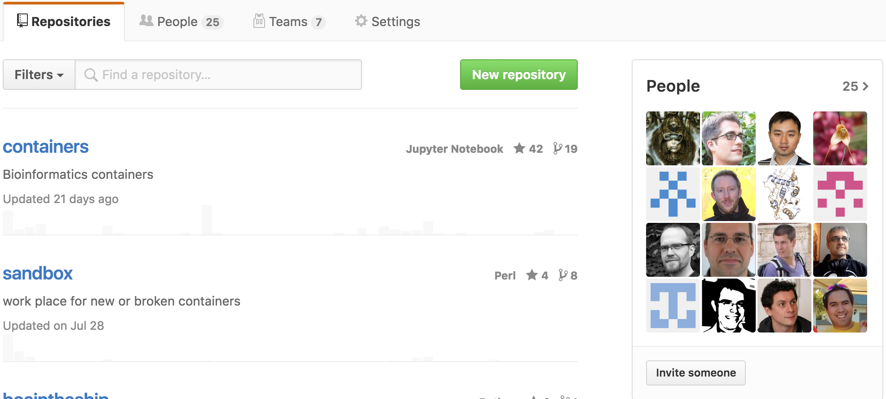
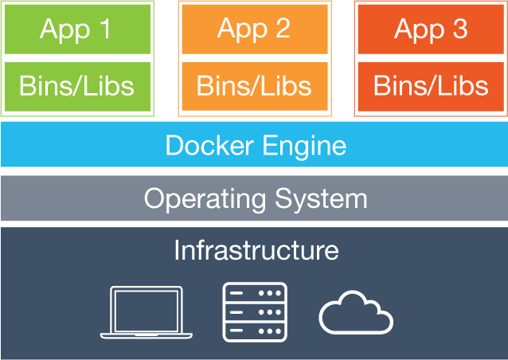
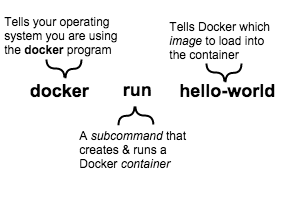
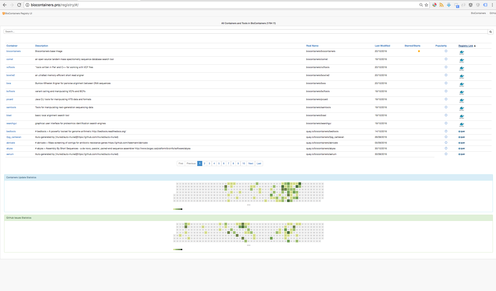

BioContainers
A community-driven framework for software standardization and containerization
Created by Yasset Perez-Riverol / @ypriverol
Who we are?
BioContainers Core Team

“BioContainers is a Community effort with more than 25 contributors.  ”
Outline
- What is a containers? & Why they are so popular?
- What is BioContainers?
- BioContainers Architecture
- Future Directions


The Matrix From Hell

Docker Solution

Containers & Images
Why is so popular
- Build once, run anywhere
- A clean, safe & portable runtime environment for your app.
- No worries about missing dependencies, packages & other pain points during subsequent deployments.
- Run each app in its own isolated container
- Automate testing, integration, packaging…anything you can script
- A VM without the overhead of a VM
Docker Architecture

Bioinformatics: Challenges & Opportunities
Lets Install OpenMS
$ apt-get -y update
$ apt-get install -y g++ autoconf qt4-dev-tools
$ apt-get install patch libtool software-properties-common
$ apt-get install python-software-properties
$ apt-get install libboost-all-dev libsvm-dev libglpk-dev
$ apt-get install libzip-dev zlib1g-dev libxerces-c-dev libbz2-dev
$ apt-get clean && apt-get purge
$ git clone https://github.com/OpenMS/contrib.git
$ mkdir /home/user/OpenMS/contrib-build/
$ cd /home/user/OpenMS/contrib-build/
$ cmake -DBUILD_TYPE=SEQAN ../contrib && \
cmake -DBUILD_TYPE=WILDMAGIC ../contrib && \
cmake -DBUILD_TYPE=EIGEN ../contrib
Success !!! ???
Bioinformatics: Challenges & Opportunities
- Software & Tools are produced by non-software developers
- No Tests, No Documentation, No Sample Data
- Lot of scripting, small components, different languages (Python, R, Perl, Java, C++..)
Leprevost, F. D. V., Barbosa, V. C., Francisco, E. L., Perez-Riverol, Y., & Carvalho, P. C. (2014). On best practices in the development of bioinformatics software. Frontiers in genetics, 5, 199.
BioContainers

BioContainer Specification
# Base Image
FROM biocontainers/biocontainers:latest
# Metadata
LABEL base.image="biocontainers:latest"
LABEL version="3"
LABEL software="Comet"
LABEL software.version="2016012"
LABEL description="an open source tandem mass spectrometry sequence database search tool"
LABEL website="http://comet-ms.sourceforge.net/"
LABEL documentation="http://comet-ms.sourceforge.net/parameters/parameters_2016010/"
LABEL license="http://comet-ms.sourceforge.net/"
LABEL tags="Proteomics"
# Maintainer
MAINTAINER Felipe da Veiga Leprevost
USER biodocker
RUN ZIP=comet_binaries_2016012.zip && \
wget https://github.com/BioDocker/software-archive/releases/download/Comet/$ZIP -O /tmp/$ZIP && \
unzip /tmp/$ZIP -d /home/biodocker/bin/Comet/ && \
chmod -R 755 /home/biodocker/bin/Comet/* && \
rm /tmp/$ZIP
RUN mv /home/biodocker/bin/Comet/comet_binaries_2016012/comet.2016012.linux.exe /home/biodocker/bin/Comet/comet
ENV PATH /home/biodocker/bin/Comet:$PATH
WORKDIR /data/
CMD ["comet"]
BioContainer Specification
- Base Image biocontainers/biocontainers
- Container version
- Software Version
- MAINTAINER
- description, websitem documentation, license, tags
$ docker run biocontainers/comet
Unable to find image 'biocontainers/comet:latest' locally
latest: Pulling from biocontainers/comet
6bbedd9b76a4: Pull complete
fc19d60a83f1: Pull complete
de413bb911fd: Pull complete
2879a7ad3144: Pull complete
668604fde02e: Pull complete
e3e623d13480: Pull complete
78df7b9c568a: Pull complete
1fb78139b491: Pull complete
ef6f894922c2: Pull complete
2ca77fd46eb6: Pull complete
b79a30a2bf32: Pull complete
476c3dfb4c52: Pull complete
99bc54f5350a: Pull complete
9c3477c06403: Pull complete
872c04818dd4: Pull complete
e10862b10d64: Pull complete
1e8951c11ce5: Pull complete
011090446896: Pull complete
Digest: sha256:a7a27176cd97b6fbef15d1cc32a105a07808ca2815d21be619c683203c9f8a6c
Status: Downloaded newer image for biocontainers/comet:latest
Comet version "2016.01 rev. 2"
(c) University of Washington
Comet usage: comet [options]
Supported input formats include mzXML, mzXML, mgf, and ms2 variants (cms2, bms2, ms2)
options: -p to print out a comet.params file (named comet.params.new)
-P to specify an alternate parameters file (default comet.params)
-N to specify an alternate output base name; valid only with one input file
-D to specify a sequence database, overriding entry in parameters file
-F to specify the first/start scan to search, overriding entry in parameters file
-L to specify the last/end scan to search, overriding entry in parameters file
(-L option is required if -F option is used)
example: comet file1.mzXML file2.mzXML
or comet -F1000 -L1500 file1.mzXML <- to search scans 1000 through 1500
or comet -pParams.txt *.mzXML <- use parameters in the file 'Params.txt'

BioContainers Registries:
- https://hub.docker.com/u/biocontainers/
- https://quay.io/organization/biocontainers
BioContainers Registries UI
Search, Sort and Statistics about each BioContainers
Relevant Links
- http://github.com/BioContainers/
- http://biocontainers.pro
- http://biocontainers.pro/registry